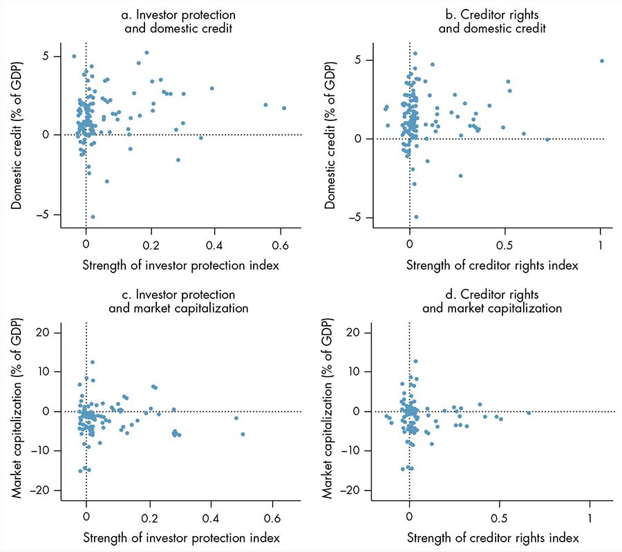
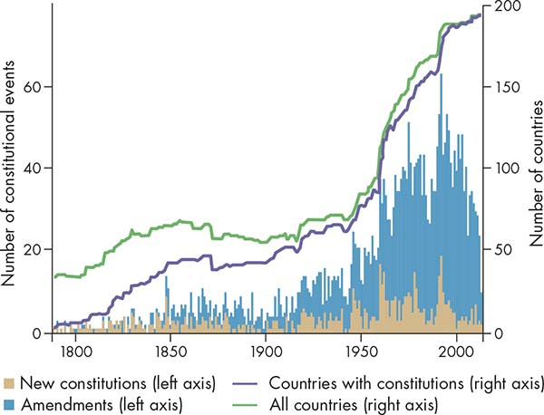
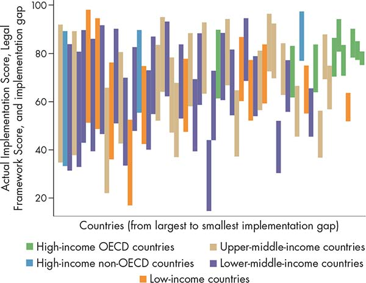
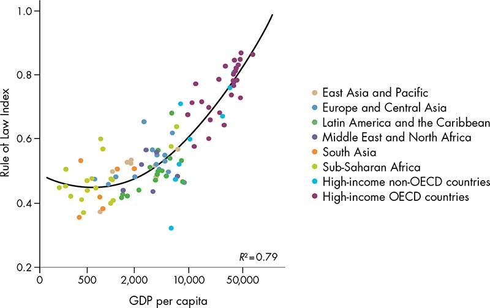
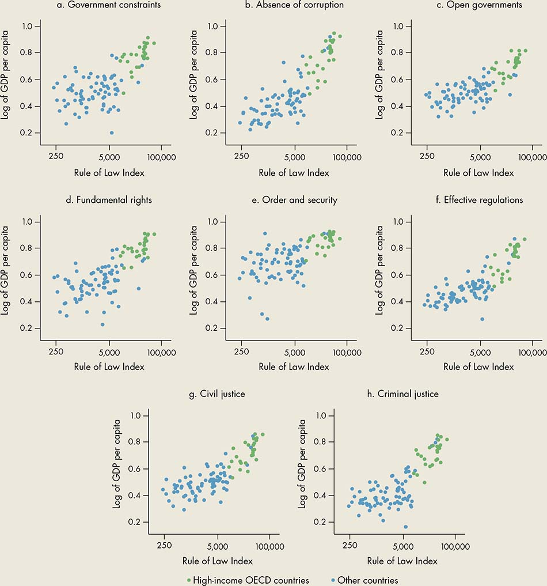
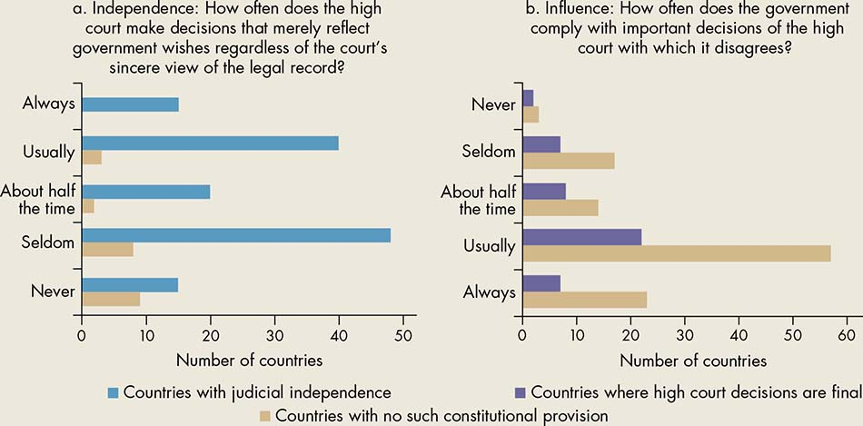

Long before the Code of Hammurabi set the law for ancient Mesopotamia, people subjected themselves—sometimes by cooperative agreement, sometimes under threat of force—to rules that would enable social and economic activities to be ordered. As societies evolved from close-knit kinship groups to larger and more diverse communities with more complex activities, the need for more formal rules increased (Fukuyama 2010). In modern states, law serves three critical governance roles. First, it is through law and legal institutions that states seek to order the behavior of individuals and organizations so economic and social policies are converted into outcomes. Second, law defines the structure of government by ordering power—that is, establishing and distributing authority and power among government actors and between the state and citizens. And third, law also serves to order contestation by providing the substantive and procedural tools needed to promote accountability, resolve disputes peacefully, and change the rules.
It has long been established that the rule of law—which at its core requires that government officials and citizens be bound by and act consistently with the law—is the very basis of the good governance needed to realize full social and economic potential. Empirical studies have revealed the importance of law and legal institutions to improving the functioning of specific institutions, enhancing growth, promoting secure property rights, improving access to credit, and delivering justice in society.1
As everyday experience makes clear, however, the mere existence of formal laws by no means leads to their intended effects. In many developing countries, the laws on the books are just that; they remain unimplemented, or they are selectively implemented, or sometimes they are impossible to implement. Governments may be unable to enact “good laws”—that is, those reflecting first-best policy—or “good laws” may lead to bad outcomes. And law itself may be used as a means of perpetuating insecurity, stagnation, and inequality. For example, for decades South Africa sustained a brutal system of apartheid rooted in law. It also has become common for political leaders in illiberal regimes to legitimize nondemocratic rule through changes to the constitution, such as amendments that extend term limits. Every day, actions that exert power over others, such as displacing the poor from their land, detaining dissidents, and denying equal opportunities to women and minorities, are taken within the authority of the law. In well- documented cases, laws intended to secure property rights have served to privilege powerful actors by allowing them to seize land and register it at the expense of rural farmers, or to perpetuate class systems and power relations.2
The mere existence of formal laws by no means leads to their intended effects. In many countries, laws remain unimplemented, or they are selectively implemented, or sometimes they are impossible to implement.
Law can be a double-edged sword: although it may serve to reinforce prevailing social and economic relations, it can also be a powerful tool of those seeking to resist, challenge, and transform those relations.3 At the local, national, and global levels, states, elites, and citizens increasingly turn to law as an important tool for bargaining, enshrining, and challenging norms, policies, and their implementation. By its nature, law is a device that provides a particular language, structure, and formality for naming and ordering things, and this characteristic gives it the potential to become a force independent of the initial powers and intentions behind it, even beyond the existence of independent and effective legal institutions. Law is thus simultaneously a product of social and power relations and a tool for challenging and reshaping those relations. Law can change incentives by establishing different payoffs; it can serve as a focal point for coordinating preferences and beliefs; and it can establish procedures and norms that increase the contestability of the policy arena.
Like policy, law does not live in a vacuum. Following the discussion in chapter 2, the nature and effectiveness of laws are primarily endogenous to the dynamics of governance in the policy arena. The ability of law—“words on paper”—to achieve its aims depends on the extent to which it is backed up by a credible commitment in order to coordinate expectations about how others will behave and to induce cooperation to promote public goods. This ability in turn is shaped by the interests of elites and by the prevailing social norms.
The task of defining law has captured the minds of legal scholars, philosophers, and sociologists for centuries. H. L. A. Hart (1961, 1) observed that “few questions concerning human society have been asked with such persistence and answered by serious thinkers in so many diverse, strange and even paradoxical ways as the question ‘What is law?’” Theorists have debated the essence of law for centuries, including the extent to which law refers to custom and social ordering, requires state-backed coercion, and encompasses notions of justice (box 3.1).
Box 3.1 What is law?
Countless theorists have attempted to define law. The definitions generally fall into one of three categories, which were initially set forth two millennia ago in the Platonic dialogue Minos: (1) law involves principles of justice and right; (2) law is an institutionalized rule system established by governments; and (3) law consists of fundamental customs and usages that order social life. Adherents of the first category are natural lawyers such as Thomas Aquinas, who assert that the defining characteristic of law is its morality, justice, and fairness. Evil legal systems or evil laws are disqualified as law in this view. The second category aligns with H. L. A. Hart and other legal positivists, who base their definition on the existence of a legal system that consists of substantive laws (primary rules) and laws governing how those rules are made (secondary rules), without regard for the justness of the law. Under this approach, evil legal systems count as law, but customary law and international law, which lack centralized enforcement systems, are not considered fully legal. The third category is represented by anthropologists and sociologists such as Eugen Ehrlich and Bronislaw Malinowski, who focus on customary law or living law. They reject the notion that law must consist of an organized legal system and instead recognize that the central rules by which individuals abide in social interactions count as law. Three key fault lines run across these conceptions of law: the first regarding the normative value of law, the second the systematic form of law, and the third the function of law.
Source: Brian Tamanaha, Washington University in St. Louis.
This Report sidesteps these philosophical debates and uses the term law or formal law in its most conventional sense to mean positive state laws—that is, laws that are officially on the books of a given state—at the national or subnational level, whether they were passed by a legislature, enacted by fiat, or otherwise formalized. Law here means the de jure rules. The operation of law requires a legal system composed of actors and processes whose function it is to make, interpret, advocate, and enforce the law. This system includes legislatures, judicial and law enforcement institutions, administrative agencies, as well as the legal profession, advocates, and civil society groups.
In all societies, state law is but one of many rule systems that order behavior, authority, and contestation. These rule systems include customary and religious law, cultural and social norms, functional normative systems (rule systems developed for the common pursuit of particular aims such as sports leagues or universities), and economic transactional normative systems (Tamanaha 2008). Such legal and normative pluralism (box 3.2) is neither inherently good nor bad: it can pose challenges, but it can also generate opportunities.
Box 3.2 Legal and normative pluralism
The phenomenon of “legal pluralism”—the coexistence of multiple legal systems within a given community or sociopolitical space—has existed throughout history and continues today in developing and developed countries alike. Modern forms of legal pluralism have their roots in colonialism, through which Western legal systems were created for colonists, whereas traditional systems were maintained for the indigenous population. That traditional or customary law still dominates social regulation, dispute resolution, and land governance in Africa and other parts of the developing world is well documented. In some cases, customary law, including a variety of traditional and hybrid institutional forms of dispute resolution, are formally recognized and incorporated into the legal system, such as in Ghana, South Africa, South Sudan, the Republic of Yemen, and several Pacific Islands states. In others, such forms continue to provide the primary means of social ordering and dispute resolution in the absence of access to state systems that are perceived as legitimate and effective, such as in Afghanistan, Liberia, and Somalia. Customary legal systems reflect the dominant (yet evolving, not static) values and power structures of the societies in which they are embedded, and as such are often thought to fall short of basic standards of nondiscrimination, rights, and due process. The extent to which they are considered legitimate and effective by local users is an empirical question and a relative one in light of the available alternatives.
A further source of normative pluralism is social norms—generally accepted rules of behavior and social attitudes within a given social grouping. Although they may be less visible than codified laws, they are highly influential. A vast literature documents how social norms derived from communal and identity groups, professional associations, business practices, and the like govern the vast majority of human behavior.a Social norms are a fundamental way of enabling social and economic transactions by coordinating peoples’ expectations about how others will act. Social sanctions, such as shame and loss of reputation, or at times socially sanctioned violence, are a powerful means of inducing cooperation to prevent what is regarded as antisocial and deviant behavior (Platteau 2000).
Yet another source of normative pluralism is generated by today’s globally interconnected world, in which a multitude of governmental, multilateral, and private actors establish and diffuse rules about a wide range of transactions and conduct (see chapter 9). Increasingly, the local experiences of law are informed by these broader rules covering topics such as trade, labor, environment, natural resources, financial institutions, public administration, intellectual property, procurement, utility regulation, and human rights. These rules can take the form of binding international treaties and contracts (hard law) or voluntary standards and guiding principles (soft law). These rules may reinforce, complement, or compete with state law to govern public and private spaces (Braithwaite and Drahos 2000; Halliday and Shaffer 2015).
Source: WDR 2017 team.
a. Ellickson (1991); Sunstein (1996b); Basu (2000); Posner (2000); Dixit (2004).
Plural normative systems can complement state laws by providing order where state institutions are not accessible, by alleviating the burden on state institutions, or by enabling diversity of preferences. For example, informal mediation of land disputes by community authorities, customary or religious determination of personal and family matters, and arbitration of contract disputes by business associations complement the state legal system in many countries. However, in some cases multiple rule systems may create confusion, undermine order, and perhaps lead to perverse outcomes. These issues could arise when people can no longer rely on the expectation that others will act in accordance with a certain set of rules (Basu 2000). In West Africa, violent communal land conflict is 200–350 percent more likely where there are competing legal authorities because the lack of certainty reduces incentives to solve disputes peacefully (Eck 2014). Where formal state laws differ sharply from the content of other prevailing social norms and rule systems, they are less likely to be obeyed and may undermine trust in the state (Isser 2011).
Finally, pluralism can help pave constructive pathways to development outcomes by enabling contestation and the shaping of preferences. Throughout history, social entrepreneurs and clever intermediaries have proven to be deft at opportunistically selecting from among legal and normative claims and authorities to advance their aims.4 Thus legal pluralism can serve to expand the languages and sites in which contests over power are waged. In India’s Gujarat and Uttar Pradesh states, advocate groups established informal women’s courts (nari adalat) to provide an alternative legal avenue for women subjected to domestic violence. These courts enabled women to draw on community norms, state law, and international human rights to contest unequal power relations and to shape emerging norms (Merry 2012).
The interaction of law, norms, and power is fundamental to understanding how law works to underlie persistence or change in the dynamics of the policy arena across its three core roles, to which we now turn.
In this role, law is an instrument of policy. It is the means by which governments codify rules about how individuals and firms are to behave in order to achieve economic and social policy outcomes, including in the criminal, civil, and regulatory domains. What makes these laws—essentially words on paper—lead to the expected outcomes, or not? How do laws interact with power, norms, and capacity to create incentives, change preferences, and generate legitimacy? Although there is agreement that the legal system affects economic performance, there is no consensus in terms of how it affects performance (box 3.3). This section draws on the legal, sociological, and economic scholarship to look at three interrelated ways that law serves to induce particular behavior, and why these may fail. These are the coercive power of law, the coordinating power of law, and the legitimizing power of law. Although they operate with distinct logic, these three mechanisms rarely work alone but rather in joint ways that interact with power, norms, and capacity to provide the commitment and collective action needed to produce results.
Box 3.3 Legal origins: Theory and practice
One of the most influential explanations of why some countries have legal systems that support more dynamic market economies than others is the legal origins theory put forward by La Porta and others (1998) and La Porta, Lopez-de-Silanes, and Shleifer (2013). This theory posits that countries that inherited a common law rather than a civil law system from their colonial occupiers have stronger investor and creditor rights, lower legal formalism, more efficiency of contract and debt enforcement, and higher judicial independence. These strengths are attributed to the strong role of private property as well as the adaptability of the case law system that characterize British common law.
The legal origins theory sparked a significant effort to reform laws and regulations to imitate common law rules (Besley 2015). Yet, empirical analysis shows that there is no clear relationship between changes in legal rules and changes in economic outcomes, reinforcing the idea that changes in the form of laws do not necessarily change the way the legal systems function (see figure B3.3.1). This analysis is further backed by evidence finding only weak correlations between changes in “Doing Business” indicators and firm-level enterprise surveys (Hallward-Driemeier and Pritchett 2011). In addition, the degree of legal convergence depends on the application and interpretation of law, making the differences based on legal traditions less clear. Indeed, Oto-Peralías and Romero-Ávila (2014) argue that, empirically, common law does not generally lead to legal outcomes superior to those provided by French civil law when precolonial population density or settler mortality or both is high. In addition, they find that the form of colonial rule in British colonies mediates between precolonial endowments and postcolonial legal outcomes.
Figure B3.3.1 Changes in investor protection and creditor rights have little impact on economic outcomes
Effects of changes in legal indexes on financial indicators

Source: WDR 2017 team, based on Oto-Peralías and Romero-Ávila (2016).
Note: In the graphs, domestic credit extended to the private sector by banks and market capitalization of listed domestic companies are expressed in percentage of gross domestic product (GDP).
These findings are in line with this Report’s argument that the effect of laws and policies is endogenous to governance dynamics. The extent to which particular laws are able to facilitate commitment and collective action in light of existing power, capacity, and norm constraints is far more predictive of economic outcomes than the content of the rules themselves. As critics of the legal origin theory have argued, the manner in which legal systems were transplanted and adapted over time—that is, whether colonial law became embedded in and responsive to local context and demand or remained superficial—is more indicative of any path dependencies than the origin of the law (Berkowitz, Pistor, and Richard 2003; Oto-Peralías and Romero-Ávila 2014).
Source: WDR 2017 team, using data from Oto-Peralías and Romero-Ávila 2016.
Perhaps the most conventional reason that people obey the law is fear of sanctions.5 If people, acting according to their narrow self-interest, do not behave in a socially desirable way, sanctions can be used to induce cooperation by changing incentives. In other words, the coercive power of law shapes the options available to people by making some actions infeasible or just too costly. The traditional law and economics approach uses a cost-benefit analysis: people will obey the law as long as the cost of noncompliance (factoring in the likelihood of being caught) is higher than the benefits. Thus state bureaucrats will refrain from accepting bribes if the cost and likelihood of being caught are higher than the benefit of accepting the bribe. Manufacturing companies will comply with environmental regulations if there is a high likelihood of being fined an amount greater than their profit margin gained from noncompliance. Families can be induced to send their female children to school if the consequence of noncompliance is sufficiently severe. The converse holds true as well, such as a law that generates a credible reward for compliance—for example, a law requiring people to register for an identity card to gain access to welfare benefits. This finding also extends to state entities. For example, compliance with the regulations of the European Union, World Trade Organization, or World Bank Group depends on the belief that the rewards of membership will outweigh the alternative.
The coercive power of law depends on the existence of a credible threat of being caught and punished or a credible commitment to obtaining a reward for compliance. As Basu (2015) argues, that credibility depends on the extent to which the law is able to coordinate people’s beliefs and expectations about what others—fellow citizens and the officials who implement and enforce laws—will do (see also Malaith, Morris, and Postlewaite 2001). However, three conditions must be met. First, the state needs the technical, physical, and human capacity to carry through with consistency. Second, the law must provide strong enough incentives to overcome the gains from noncompliance, taking into account that many people may not exhibit “rational behavior” (World Bank 2015), as well as overcome adherence to any alternative conflicting normative order. Third, the law needs to be in line with the incentives of those with enough power to obstruct implementation so they will go along with it (unless truly effective restraints on such power exist). Together, these conditions will create a credible commitment that will induce rational compliance.
The coercive power of law depends on the existence of a credible threat of being caught and punished or a credible commitment to obtaining a reward for compliance.
Take, for example, a law prohibiting bribery. First, people need to believe that the state has the capacity to detect and punish those engaged in the practice—that is, it has effective administrative and law enforcement institutions. Even if the state does not have adequate reach to detect violations everywhere, it could be aided by private enforcement to the extent the law (in combination with a broader range of related laws) incentivizes whistle-blowing by those in a position to do so. And finally, the sanction for violating the law must leave the perpetrator worse off than any benefits from engaging in bribery. But getting this formula right is complicated and costly. For example, too weak a sanction will be absorbed as part of the cost of doing business, while too strong a sanction for the behavior of potential whistle-blowers will reduce the number of people who will engage in private enforcement.6
But even with the right formula, the law must contend with powerful interests. To the extent that they benefit from bribery, enforcement will likely be blocked or not consistent or credible. Norms may also compete in ways that undermine implementation. Several studies have looked at the effect of “practical norms” or “culture” on the impact of laws. For example, laws establishing meritocratic civil service have gone unimplemented in Cameroon and Niger because of an overpowering norm that people should not be sanctioned for breaking the rules unless it is an egregious violation. The importance of social networks and neopatrimonial logic also undercuts the willingness of officials to sanction workers. As Olivier de Sardan (2015, 3) notes, “The gap between official rules and actual behavior is, per hypothesis, not a space where norms are forgotten or missing, but a space where alternative norms are in use.”7
Competing normative orders can lead to perverse effects. For example, rigorous prosecution of domestic violence in Timor-Leste during its administration by the United Nations resulted in a significant reduction in the reporting of domestic violence because of the devastating social stigma and economic consequences for women (Chopra, Ranheim, and Nixon 2011). Similarly, stricter mandatory arrest laws for crimes related to domestic violence in the United States were found to be associated with higher murder rates of intimate partners because reporting of episodes of escalating violence to the police decreased (Iyengar 2009; Goldfarb 2011). In India, a recent law mandating the death penalty for convicted rapists could have similar effects because of the greater pressure now on women not to report a rape (Pande 2015). India has had strong laws on the books prohibiting a range of gender-based violence, including child marriage, sex-selective abortion, dowry payment, and domestic violence, but these have barely made a dent in behavior because the social sanctions associated with abandoning customary practice to follow the law are far stronger (Pistor, Haldar, and Amirapu 2010). Here the norm is likely operating at several levels. It undercuts the incentive created by the legal sanction, and it also likely undermines a credible commitment because powerful interests (and individuals in legal institutions) may also adhere to such norms.
Social norms that are not based on deep-rooted attitudes can also undercut the intended outcome of a law. As Ellickson (1991) famously documented in the study Order without Law, laws that conflicted with the social norms developed to regulate cattle herding in a California county confused cattlemen and led to increased conflict. A law introduced by the British in colonial India allowing agricultural lenders to enforce debts in court was intended to make credit markets more competitive to the benefit of farmers. However, in practice the law had the opposite effect because it undercut the incentives that lenders had under an informal enforcement regime to lend at favorable interest rates (Kranton and Swamy 1998).
An effective system of legal compliance based on sanctions is therefore quite difficult to achieve. It requires significant investment in capacity and infrastructure and careful analysis of the types of incentives most likely to work. However, even those measures will not suffice in the face of power and norm constraints. These considerations lead to the second and third mechanisms through which law affects behavior, which do not rely on force.
The second way that law leads to economic and social policy outcomes is by serving as a focal point for coordinating behavior. This is also known as the expressive power of law (Cooter 1998; McAdams 2015). Here law acts as a signpost—an expression—to guide people on how to act when they have several options, or, in economic terms, when there are multiple equilibria (Basu 2015; McAdams 2015). People comply with the law because doing so facilitates economic and social activities.
Law acts as a signpost—an expression—to guide people on how to act when they have several options.
The easy case is when the law establishes rules about a neutral activity to which citizens have no particular normative attachments. Thus when the law mandates driving on the right- or the left-hand side of the road, people generally comply, not because they fear punishment but because doing so facilitates road safety. The harder question is whether the law in its expressive role can coordinate behavior around more highly charged issues, where alternative norms and preferences are strong. In such cases, the law would need to shift norms and preferences away from alternative options in such a way that the law becomes the salient focal point.
Consider the astonishing success of the ban on smoking in public places in many parts of the world even in the absence of rigorous state enforcement. Here scholars have demonstrated that the ban has served to empower those persons—nonsmokers—who adhere to its substantive point to pressure smokers to refrain. In a short period of time, this empowerment has shifted societal norms so that the wrong of smoking in public places has become internalized (McAdams 2015). In other words, the ban has served to change the balance of power and norms in the policy implementation arena by legitimizing the claims of some over others. Sunstein (1996a) calls this phenomenon the norm bandwagon in which the lowered cost of new norms leads an increasing number of people to reject old norms until a tipping point is reached at which the old norm elicits social disapproval.
For this process to work, a critical mass of supporters of the new norm is needed, and they must be able to engage in collective action to push toward the tipping point. “When there are contestations in local norms, formal law can strengthen the stance of those whose norms are most closely aligned with the legal rule” (Shell-Duncan and others 2013, 824). The more deeply held the old norm and the weaker the supporting coalition for the new norm, the more care is needed to introduce a new norm through law so it does not backfire. Gradual or partial enforcement, coupled with education, awareness, and coaxing campaigns, allow time for norms to shift (Acemoglu and Jackson 2014).
This process of norm shifting has been analyzed and documented by legal anthropologists as a process of “translation” or “vernacularization” involving intermediaries who act as bridges between the world of formal law and the real experiences of local people (Merry 2006). For example, the introduction of an inheritance law in Ghana that was not in line with customary systems was followed by a slow evolution of custom and social change. The formal law was not enforced through coercion; rather, it served as a magnet to provide people with an alternative to custom (Aldashev and others 2012). Similarly, legal prohibition of female genital mutilation in Senegal provided an “enabling environment” for those who wished to abandon the practice. In Senegal, this legal prohibition, together with a robust education and awareness campaign, shifted more people to this category. However, among those who adhered strongly to the practice, the fear of prosecution (even though no sanctions were carried out) drove the practice underground, seriously impairing the health of some young women (Shell-Duncan and others 2013).
This is not to overstate the expressive power of law. Law does not do the work of shifting a norm by itself, but rather depends on the incentives it provides to those who already accept the new law, as well as a range of support programs that drive the process of internalizing the new norm more broadly. Although rigorous enforcement can backfire, sometimes enforcement is needed to kick-start the process of norm shifting and internalization. For example, during the first term in which a constitutional amendment mandating gender quotas in village councils in India was implemented, voters’ attitudes toward women were generally negative. After two terms of repeated exposure to women candidates, however, men’s perceptions of the ability of women to be leaders significantly improved (Beaman and others 2009). Moreover, the aspirations of parents and their adolescent daughters for education were positively affected (Beaman and others 2012), and women’s entrepreneurship in the manufacturing sector increased (Ghani, Kerr, and O’Connell 2014). In the United States, a large coercive force was required to implement racial desegregation laws in the face of mass and even violent resistance, but over time these laws contributed to internalizing the norm change (Schauer 2015).
One way in which development affects governance is by changing norms. Certain norms are more responsive to a higher level of development. The introduction and effectiveness of child labor regulations have been shown to be related to income levels; as households rely less on children’s incomes, the impact of formal regulations increases (Basu 1999). In India, however, child labor regulations led to a decline in child wages and a shift to greater child labor among poorer families (Bharadwaj and Lakdawala 2013). Some norms are much more persistent and less responsive to change, such as those founded on some religious or philosophical principles.
Although sanctions can be used to control deviant behavior, and law can, under the right conditions, gradually shift certain norms, these are extremely costly and ad hoc ways of inducing changes in behavior. Ultimately, a culture of voluntary compliance with the law depends on the legitimacy of the law. Scholars point to three kinds of legitimacy: outcome, relational, and process legitimacy (as described in chapter 2). The latter two are particularly relevant to the role of law. Relational legitimacy (also referred to as substantive legitimacy in some strands of the literature) refers to a situation in which the content of the law reflects people’s own social norms and views of morality. In such cases, the law is largely irrelevant because people would comply for reasons independent of the existence of the law. Even though the threat of sanctions lurks in the background, it is primarily there to handle the exceptional cases of deviance (Schauer 2015).
In heterogeneous societies, for substantive legitimacy the law must strike a balance between recognizing differences in worldviews and enabling society to function as a cohesive entity (Singer 2006). Thus debates over how states formally take into account religious law or customary law are fraught with deeply political issues, with significant implications for legitimacy. For example, in Bolivia, Colombia, and Ecuador constitutional recognition of communal rights and indigenous law was critical in expanding state legitimacy through a sense of shared citizenship (Yashar 2005). Formal incorporation of Islamic law is at the heart of contests to define national identity in states and regions with large Muslim populations from Libya to Mindanao. And official recognition of forms of traditional or customary law remains an important issue in defining state-citizen relations in much of Sub-Saharan Africa.
Process legitimacy (also referred to as procedural legitimacy) refers to a situation in which laws are respected and observed to the extent that they emerge from a system deemed fair and trustworthy. Many years ago, German sociologist Max Weber (1965) argued that rational legal authority (in contrast to traditional or charismatic authority) depends on a society’s belief in the legitimacy of order. In his seminal study, Tyler (2006) offers empirical support for the argument that people obey laws for reasons other than fear of punishment when they believe the laws are the product of a system they believe to be legitimate. Legitimacy here refers to procedural regularity, opportunity for citizen input, and the respectful treatment of citizens by those in authority, or what this Report refers to as contestability. These findings were confirmed in a study of cross-country survey data in Africa. People’s compliance with the law was found to be related to their normative judgment about the legitimacy of government, based on assessments of government competence and performance, but particularly on perceptions that government is procedurally just (Levi, Tyler, and Sacks 2012).
Transplanting laws from one country to another has often failed in the absence of a process of adaptation and contestability. Based on an econometric study of 49 countries that were recipients of foreign law, Berkowitz, Pistor, and Richard (2003) found that countries that adapted the transplanted law to meet their particular socioeconomic conditions, or had a population that was already familiar with basic principles of the transplanted law, or both, had more effective legality than countries that received foreign law without any similar predispositions. Similarly, legal transplants in the context of integration into the European Union were more successful to the extent that they were accompanied by efforts to empower a variety of domestic state and nonstate actors through multiple methods of assistance and monitoring, and that they were able to merge monitoring and learning at both the national and supranational levels (Bruszt and McDermott 2014). By contrast, in parts of southeastern Europe the transplantation of judicial reform and anticorruption laws that bypassed legislative processes and other forms of adaptation did not produce the desired effects (Mendelski 2015).
In this second role, law plays the more foundational constitutive role of defining the de jure governance process. It is through law—generally constitutions8—that states establish and confer power on state actors, defining the authority and responsibilities of different agencies and branches of government and their role in the policy-making and implementation process, as well as formal constraints on their power.9 This task is typically carried out by drafting provisions that set out a range of checks and balances, including the horizontal allocation and separation of powers between different branches; by requiring special procedures for amendment; by establishing independent supervisory and review bodies; and, increasingly, by including a bill of rights. These formal de jure arrangements, as modified by informal and de facto arrangements, establish the nature of the policy bargaining arena. In this way, constitutions are effectively rules about making rules. This section addresses why and when the formal rules in fact determine the allocation and limits on power, or act only as “parchment barriers,” as well as the other roles that constitutive laws play in shaping the dynamics of governance.
Constitutions are proliferating (figure 3.1). The growing number corresponds to both the increase in the number of independent states as well as the mass transition of countries in central Europe and in the former East European bloc in the post-Soviet era. It also reflects the fact that constitutions are generally short-lived. The average life span of a constitution is 19 years, and in Latin America and eastern Europe it is a mere eight years (Negretto 2008; Elkins, Ginsburg, and Melton 2009). Constitutions are thus an important object of political bargaining and ordering, with significant energy invested in designing and adopting them. This is true across all types of political regimes (Ginsburg and Simpser 2014).
Figure 3.1 Constitutions have become ubiquitous, but they are often replaced or amended
Number of countries with constitutions and number of constitutional events, 1789–2013

Source: WDR 2017 team, using data from Comparative Constitutions Project, 2015.
And yet the effectiveness of constitutions in constraining power through rules is mixed, leading to two kinds of governance failures. The first—as reflected in the short life span of constitutions—is when the bargain itself fails. The second is when the words on paper persist, but the rules are ignored in the face of power and deal making. In the first failure, the result could be positive to the extent that it leads to a new, more stable, bargain. But it also could be detrimental to development outcomes if conflict ensues and if chronic failure undermines the credible commitments needed to support investment and pro-poor policies. Empirical evidence on the extent to which constitutional endurance matters is mixed. Elkins, Ginsburg, and Melton (2009) demonstrate significant associations between longer-lived constitutions and various social and political goods, including protection of rights, democracy, wealth, and stability, but establishing causality is problematic. In any event, the entrenchment of fundamental principles and its positive impact on credible commitment and coordination generally strengthen as constitutions age.
The second type of failure—widespread divergence between constitutional limitations on power and actual practice—is more directly associated with poorer development outcomes (figure 3.2). As explored in chapters 5 and 6, failure to uphold the security of property rights and basic civil, political, and economic rights has negative impacts on both growth and equity. More generally, failure to enforce rule-based limits on power skews the bargaining process in favor of elite interests. Nevertheless, divergence from the rules may also be an important means of holding together elite bargains. To understand what accounts for divergence between the rules and practice, it is helpful to first examine the conditions under which rules stick.
Figure 3.2 In every country, there is a gap between the laws on the books and the laws implemented, but high-income OECD countries generally do better than low- and middle-income countries

Sources: WDR 2017 team, based on data from World Bank, World Development Indicators (database), 2015, and Global Integrity (database), 2012.
Note: The data used are for 2009–11. Global Integrity’s Legal Framework Score measures the quality of laws “on the books” in six categories: (1) nongovernmental organizations, public information, and media; (2) elections; (3) government conflicts of interest, safeguards, and checks and balances; (4) public administration and professionalism; (5) government oversight and controls; and (6) anticorruption legal framework, judicial impartiality, and law enforcement professionalism. The Actual Implementation Score measures actual practice. These scores range between 0 and 100, with 0 being the worst score and 100 being perfect. The implementation gap is the difference between the two indexes and thus the length of the bar. OECD = Organisation for Economic Co-operation and Development.
Why would rulers adhere to constitutional rules on the limits of power? Unlike regular laws that have organized institutions of enforcement, constitutions pose the ultimate question of who guards the guardians.10 The answer is that effective constitutions need to be self-enforcing. Constitutions are essentially bargains among major interest groups about how to allocate power. As long as these groups feel they are better off with the rules than without them, the rules will stick. Thus effective constitutions establish an equilibrium by addressing problems of coordination and commitment (Weingast 2013). Constitutions facilitate elite cohesion by coordinating which institutions play which role, thereby minimizing the costs of renegotiation and conflict. The so-called entrenchment of provisions, requiring a high standard for change in the form of amendment, provides credibility over time by guarding against shifts in preference, thereby enhancing the credibility of commitments (Ginsburg 2010; Ginsburg and Simpser 2014). Once entrenched, the rules become “sticky” as institutionalized arrangements develop around them, and it is far less easy for major interest groups to exit if they become unhappy with the allocation of power. Significantly, constitutions also serve as a coordinating device to enable collective action by citizens in the event of a transgression by those in power.
An analysis of a data set of every constitution since 1789 found that enduring constitutions generally have certain common characteristics. They need to be sufficiently inclusive to give potential spoilers an adequate payoff for staying inside the bargain (how to do so is explored further in chapter 4). They need to be flexible and adaptive so they can be resilient in the face of shocks that can change the balance of power among interest groups. And they need to be specific: the degree of specificity appears to correlate positively with endurance, perhaps because it reduces the scope for subsequent disagreement and requires more investment in negotiation, giving people a bigger stake in success (Elkins, Ginsburg, and Melton 2009).
How effective constitutions are at enabling citizen collective action for enforcement is related to the way in which constitutions act as a focal point. Even when politicians have little intention of adhering to constitutional provisions—such as when constraints on power and rights are adopted as aspirational or rhetorical appeasement—the words on paper can matter to the extent that they enable collective action. This is particularly important during times of conflict among elites, when constitutions can serve as devices of horizontal accountability. Thus, for example, in Tunisia adoption of international human rights treaties by the prior regime was largely seen as an empty gesture. Yet, during the transition to a new government, these provisions were seized upon by opposition forces and used to structure that government. Even when the legal enforceability of constitutions is limited, the language of constitutional protection has frequently been used as a basis for political mobilization by competing elite groups (Ginsburg and Simpser 2014). As will be discussed more fully, constitutions also serve as an important device of vertical accountability because the special status accorded to constitutional rights can enable citizen collective action aimed at the fulfillment of those rights.
A number of studies have sought to demonstrate empirically how various institutional designs optimize the coordination and commitment embraced by different configurations of elite interests. In theory, different political institutions—such as presidential versus parliamentary or majority vote versus proportional representation—create different incentives that favor certain outcomes.11 Actual outcomes, however, depend on the extent to which these de jure rules are in fact used as the main locus of political activity—that is, whether or to what extent political actors choose to invest in these institutions so that they become a self-reinforcing equilibrium (Caruso, Scartascini, and Tommasi 2015).12
In many developing countries—and to a certain extent, in developed ones as well—power is often exercised through a means other than those prescribed by law. Such alternative means are sometimes called “alternative political technologies” (Caruso, Scartascini, and Tommasi 2015) or “informal institutions” (Helmke and Levitsky 2004; Khan 2010). These means include a variety of ways of making bargains and deals outside the rules, including conventions for brokering power, clientelism, and purchasing favor (bribery, vote buying), as well as nonstate authority structures such as traditional or religious mechanisms. In some cases, the use of a means of exercising power not based on law is simply a matter of deviance and abuse. But often it is serving the purpose of solving commitment and collective action problems in ways more in line with elite incentives and the de facto distribution of power. In such cases, as Khan (2010, 1) explains, “informal institutions like patron- client allocative rules, and informal adaptations to the ways in which particular formal institutions work play a critical role in bringing the distribution of benefits supported by the institutional structure into line with the distribution of power.” In other words, divergence between the law and practice is rarely an absence of rules but rather a matter of replacing law with rules that may be better suited—under the circumstances—to generating and meeting shared expectations in order to uphold basic stability through elite bargains (North and others 2013). The conditions under which deals-based elite bargains evolve into rule-based governance constrained by law are the subject of chapter 7.
It is true that in history the law can be seen to mediate and to legitimize existent class relations. Its forms and procedures may crystallize those relations and mask ulterior injustice. But this mediation, through the forms of law, is something quite distinct from the exercise of unmediated force. The forms and rhetoric of law acquire distinct identity which may, on occasion, inhibit power and afford some protections to the powerless.
—E. P. Thompson (1975, 266)
The role of law in ordering behavior and ordering power is primarily about how elites use law to implement policies and to exercise authority. The third role of law is about how citizens—nonelites—use law to challenge and contest the exercise of power. As the quotation by the historian E. P. Thompson describes, law is both a product of social and power relations and a tool for challenging and reshaping those relations. This section examines how law, often in combination with other social and political strategies, can be used as a commitment and coordination device to promote accountability, and also to change the rules of the game to foster more equitable bargaining spaces.
Law is both a product of social and power relations and a tool for challenging and reshaping those relations.
In well-developed legal systems, legal institutions promote accountability by imposing horizontal checks on authorities and providing a forum for vertical claims by citizens. These legal institutions include courts and associated agencies such as prosecutors and police; special-purpose adjudicative and oversight bodies such as ombudsmen, auditors, and anticorruption or human rights commissions; and the public administrative law functions of executive agencies such as those involved in property allocation and registration, the issuance of identity documents, or the provision of health, education, and sanitation services. The extent to which these institutions are accessible and effective forums for citizens to challenge the more powerful in society varies considerably from country to country, as a function of historical circumstances as well as the political calculus of elites. Spotlight 3 on effective legal institutions discusses these conditions in depth.
Even though legal systems in many countries continue to lack effectiveness and autonomy, there has been a marked trend toward juridification of social and political contestation across the globe. As Rodríguez Garavito (2011, 274–75) has noted, “The planetary expansion of the law is palpable everywhere: in the avalanche of constitutions in the Global South; in the growing power of judiciaries around the world; in the proliferation of ‘law and order’ programs and the ‘culture of legality’ in cities; in the judicialization of policy through anticorruption programs led by judges and prosecutors; in the explosion of private regulations, such as the voluntary standards on corporate social responsibility; and in the transmutation of social movements’ struggles into human rights litigation.” Law increasingly provides the common language for, and demarcates the arenas of contest among, very different contenders: citizens and states; multinational corporations and indigenous people; states, citizens, and international organizations.13
In one example of how law is changing the contestability of policy arenas, a majority of developing countries have incorporated social and economic rights into their constitutions, and citizens are increasingly using these provisions to advance development goals (Brinks, Gauri, and Shen 2015). This trend has been most striking in Latin America, where the courts have been transformed—from weak, dependent, ineffective institutions to central players in issues at the forefront of politics and development. A key reason for this shift in role is that judicial actors have been emboldened by political fragmentation to assert the power of their institutions at the same time that citizens are demanding this role (Couso, Huneeus, and Sieder 2010; Helmke and Rios-Figueroa 2011). In India, legal institutions—at least at the level of the Supreme Court—have also proven to be an important venue for contestation, with an extensive tradition of public interest litigation and high-profile legal challenges to dominant power interests and social norms.14 India’s Supreme Court has upheld the rights of the disadvantaged and has enhanced government accountability over issues such as child and bonded labor, environmental hazards, public health, and nondiscrimination (Shankar and Mehta 2008; Deva 2009). Courts in South Africa have also made important judgments holding government accountable for the provision of housing and affordable antiretroviral drugs, among other things (Klug 2005; Berger 2008).
In social justice litigation, the legal action itself need not result in a favorable judgment to be a successful part of a contestation. Even judicial defeats can be leveraged by activists to coordinate collective action around rights consciousness (McCann 2004; Rodríguez Garavito and Rodríguez-Franco 2015). As explored further in chapter 8, the success of such efforts depends to a large degree on the ability of claimants to ground the language of rights in local social and political structures of demand—a process Brinks, Gauri, and Shen (2015) call “vernacularization.” As Santos and Rodríguez Garavito (2005) argue, political mobilization at the local—and often international—level is a necessary precursor of effective rights-based strategies for the disadvantaged. Thus efforts to empower the aggrieved to use law and courts must combine legal awareness with broader strategic coalition building.
Law has also proven to be a powerful tool of accountability even outside of legal institutions by framing claims and serving as a coordinating device. For example, in China citizens are increasingly deploying official laws and policies in efforts to hold district officials accountable for illegal extraction, rigged elections, and corruption—a process dubbed “rightful resistance.” Courts seldom feature in these efforts, which tend to “operate near the boundary of authorized channels, employ the rhetoric and commitments of the powerful to curb the exercise of power, hinge on locating and exploiting divisions within the state, and rely on mobilizing support from the community” (O’Brien and Li 2006, 2). The use of legal discourse, without recourse to courts, has also played a central role in tenant associations’ claims to adequate housing in Kenya, indigenous groups’ contests over land and natural resources in Mexico, and garment workers’ efforts to gain fair labor conditions in Bangladesh (Newell and Wheeler 2006). In these cases, the law serves to “name and frame”—that is, to structure dialogue and provide a coordination device for more contentious strategies for accountability.
Where state legal institutions have lacked the capacity for credible commitment, they have at times sought support from international actors. For example, aware of its inability to commit to fair anticorruption procedures against powerful interests, Guatemala sought support from the United Nations to establish the International Commission against Impunity in Guatemala (CICIG). The CICIG has successfully prosecuted over 150 current or former government officials, and in 2015 it charged the sitting president with corruption, leading to his resignation. Other countries, including Bosnia and Herzegovina, Cambodia, Fiji, Kosovo, and the Solomon Islands, have allowed international judges and prosecutors in their courts to enhance credible commitment around sensitive and political cases. Although these initiatives have led to the successful prosecutions of sensitive war crimes and corruption cases, they have also been criticized for lack of sustainability in that they bypass rather than engage directly in the domestic bargaining arena.
Where domestic courts are perceived as weak in the face of powerful interests, citizens have brought legal cases to other jurisdictions. This approach has been facilitated by the growing recognition of the concept of universal jurisdiction for severe crimes, as well as by the increasingly transnational character of powerful interests. For example, local communities affected by severe environmental damage caused by a mining company in Papua New Guinea sought redress in an Australian court, the home jurisdiction of the company. Although the legal case itself was settled and not wholly successful in containing the damage, it triggered a change in the local bargaining arena, mandating that community representatives be engaged in negotiating community development agreements with the company and government (Kirsch 2014).
The legal arena today extends beyond the borders of nation-states in other ways as well. As discussed further in chapter 9, an era of “global governance” is under way. It is characterized by the proliferation and fragmentation of global, regional, and transnational instruments, including binding laws (so-called hard law, including treaties and conventions) and soft law (voluntary guidelines, standards, principles, and codes of conduct). The domains covered by these instruments go far beyond relations among nation-states to reach deep into the way national state and nonstate actors govern in many areas, including business, labor, crime, information, public financial management, intellectual property, procurement, utility regulation, human rights, food and safety standards, and environmental sustainability. The formation of these transnational governance regimes parallels this Report’s framework: they are the product of contests among multiple actors—state, private, and civic—shaped by power, interests, and norms, which in turn are shaped and reshaped by the outcomes of these rules (Braithwaite and Drahos 2000). This web of legal pluralism creates opportunities for domestic actors seeking to contest the prevailing power and norms. Global factory workers in Mexico and Guate-mala appealed to international labor standards and company codes of conduct and successfully managed to improve working conditions and to unionize in a context in which it would have been difficult otherwise to overcome entrenched resistance. Critical to their success were their links to transnational advocacy networks that exerted pressure on local governments (Rodríguez Garavito 2005). Cambodian garment workers also benefited from international labor standards that served as a commitment device for the government in order to gain favorable trade conditions (Adler and Woolcock 2009). Elsewhere, indigenous groups have been key players in the formation of international standards for extractive industries, in particular the norm of free, prior, and informed consent (Rodríguez Garavito 2011). In these examples, legal standards were converted into institutional arrangements that enhanced the contestability of the bargaining arena: collective bargaining arrangements, a tripartite labor arbitration council, and procedural requirements for consultations between extractive companies and local communities.
In establishing the rule of law, the first five centuries are always the hardest.
—Gordon Brown
The rule of law is widely recognized as necessary for the achievement of stable, equitable development. Indeed, over the last few decades no other governance ideal has been as universally endorsed.15 There is far less agreement, however, on what it means. At a minimum, the rule of law requires that government officials and citizens be bound by and act consistent with the law (Tamanaha 2004; Fukuyama 2014). But this in turn requires that the law be clear, certain, and public and that it be applied equally to all through effective legal institutions.16
The rule of law is widely recognized as necessary for the achievement of stable, equitable development.
“Thin” versions of the rule of law have largely given way to “thicker” versions that move beyond a focus on procedure to one on substance requiring adherence to normative standards of rights, fairness, and equity.17 The United Nations exemplifies this normative stance, defining the rule of law as “a principle of governance in which all persons, institutions and entities, public and private, including the State itself, are accountable to laws that are publicly promulgated, equally enforced and independently adjudicated, and which are consistent with international human rights norms and a principle of standards.”18
Correlations between indicators of the rule of law and income levels are strong (figure 3.3). But the direction of causality and the mechanisms that determine this association are less well understood (box 3.4).
Figure 3.3 The rule of law is strongly correlated with high income
Rule of Law Index versus GDP per capita, 2015

Sources: WDR 2017 team, based on data from the World Justice Project, Rule of Law Index, 2015, and World Bank, World Development Indicators (database), 2015.
Box 3.4 Transitions to the rule of law
Compared with the extensive literature on transitions to democracy, a surprisingly small amount of systematic work has been carried out on transitions to a modern rule of law. History reveals three separate types of transitions from which one can learn: (1) the shift from a customary, informal, and often highly pluralistic system of law to a unified modern one; (2) how powerful elites come to accept legal constraints on their power; and (3) how countries successfully adapt foreign legal systems to their own purposes.
The shift from a customary or pluralistic system to a codified modern one is usually motivated, at base, by actors who believe a single formal system will better serve their interests, particularly their economic interests in expanded trade and investment. Scale matters: at a certain point, the personal connections that characterize customary systems become inadequate to support transactions between strangers at great remove. However, the transition costs are high, and the customary rules are often preferred by the existing stakeholders. Therefore, political power is critical to bringing about the transition.
Formal law is usually applied first to nonelites (“rule by law”). There then is a shift to “rule of law” when the elites themselves accept the law’s limitations. North, Wallis, and Weingast (2009) have argued that constitutional constraints become self-reinforcing when power in the system is distributed evenly and elites realize that they have more to gain in the long run through constitutional rules. What this theory does not explain, however, is why these same elites stick to these constraints when the power balance subsequently changes and one group is able to triumph over the others. Similarly, independent courts are always a threat to elite power, and so why do rulers come to tolerate them when they have the power to manipulate or eliminate them? These questions suggest that constitutionalism needs to be underpinned by a powerful normative framework that makes elites respect the law as such. Subsequent respect for the law will depend heavily on the degree of independence maintained by legal institutions—the judiciaries, bars, law schools, and other structures that have persisted even after their religious foundations have disappeared.
Finally, as for importing foreign legal systems, perhaps the most important variable determining success is the degree to which indigenous elites remain in control of the process and tailor it to their society’s own traditions. Japan experimented with a variety of European systems before settling on the German civil code and Bismarck constitution. Later in the 20th century, China, the Republic of Korea, and other Asian countries similarly adapted Western legal systems to their own purposes. In other cases such as Hong Kong SAR, China, Singapore, and India, the colonial power (Great Britain) stayed for a long time and was able to shape the local legal norms in its own image. Even so, today India practices a far higher degree of legal pluralism than does Great Britain itself, as part of the process of local adaptation. Less successful have been cases in Sub-Saharan Africa, where customary systems were undermined by colonial authorities but not replaced by well- institutionalized modern systems.
Much more research is needed on the question of legal transitions. It is clear that a fully modern legal system is not a precondition for rapid economic growth; legal systems themselves develop in tandem with modern economies. It may be that the point of transition from a customary to a formal legal system occurs later in this process than many Western observers have thought. But relatively little is known about the historical dynamics of that transition, and thus too little in the way of theory is available to guide contemporary developing countries as they seek to implement the rule of law.
Source: Prepared by Francis Fukuyama for WDR 2017.
Meanwhile, this chapter has focused not on the rule of law but on the role of law—the instrumental way through which groups and individuals in society use law as a means of promoting, enforcing, and institutionalizing interests or objectives. Attention to the microfoundations of laws’ effectiveness can help policy makers and citizens design laws and strategies more likely to achieve success (box 3.5). Ultimately, it is through this dynamic between power and contestation that societies shape their transitions to the rule of law.
Box 3.5 Understanding the role of law in context
As this chapter has argued, law is not an unqualified good. Depending on the context, law might functionally
• Empower change actors—or—reinforce existing power
• Provide order and certainty—or—create conflict and exacerbate confusion
• Build legitimacy—or—undermine legitimacy
• Structure contests—or—distract from real sites of contest.
To produce the effects that appear first in each line of this list, legal interventions should ensure that the forms prescribed by law are able to demonstrate commitment and to induce collective action toward the desired end. Specifically, effective laws are able to
• Change preferences by enhancing substantive focal points around which coordination can occur
• Change incentives by changing payoffs to lower the cost of compliance or increase the cost of noncompliance
• Shape bargaining spaces that increase the contestability of underrepresented actors.
Source: WDR 2017 team.
1. Acemoglu (2003); Galiani and Schargrodsky (2010); Besley and Persson (2014).
2. See, for example, Thompson (1975); Mattei and Nader (2008); and Lund (2012).
3. Thompson (1975); Epp (1998); McCann (2004); Rodríguez Garavito (2011).
4. See, for example, Benton (2001); Belmessous (2011); and Yannakakis (2015).
5. See Schauer (2015) for an extensive argument about the importance of the role of force in law.
6. For a debate on legalizing bribe giving, see Basu (2011) and Dufwenberg and Spagnolo (2014).
7. See also Acemoglu and Jackson (2014) and d’Iribarne and Henry (2015).
8. A constitution is certainly not the only instrument that sets out rules about power, but it is the most visible one and the most systematically studied. A range of other laws that confer authority and define responsibilities and limitations on power, such as local governance laws and enabling laws for various state agencies, are also relevant.
9. Acuña and Tommasi (1999) propose a similar classification of rules applied at a more practical level (policies, organizational forms, rules about making rules).
10. Regular laws are also plagued by this same question. It is for this reason that Basu (2015) emphasizes that laws work only to the extent that they establish credible expectations about what others will do.
11. See, for example, Buchanan and Tullock (1962); Persson and Tabellini (2003); and Voigt (2011).
12. This discussion draws on Aoki (2001) and Greif (2006).
13. Comaroff and Comaroff (2001); Rajagopal (2003); Hirschl (2004); Santos and Rodríguez Garavito (2005).
14. However, the trend of public interest litigation in India has been criticized for shifting in recent years from pro-poor causes to promoting the interests of the upper classes (Gauri 2009). Indeed, if law and legal institutions can be used for pro-poor ends, they can likewise be used for other causes (Scheingold 2004).
15. Tamanaha (2004); Carothers (2006); Desai and Woolcock (2015).
16. Hadfield and Weingast (2014) model how these characteristics are necessary to achieve an equilibrium of behavior in line with the rule of law.
17. This aligns with the views of legal and moral philosophers such as Lon Fuller and John Rawls, who define law in terms of natural justice and fairness.
18. The definition continues: “It requires, as well, measures to ensure adherence to the principles of supremacy of law, equality before the law, accountability to the law, fairness in the application of the law, separation of powers, participation in decision-making, legal certainty, avoidance of arbitrariness and procedural and legal transparency” (United Nations 2004, 4).
Acemoglu, Daron. 2003. “Why Not a Political Coase Theorem? Social Conflict, Commitment, and Politics.” Journal of Comparative Economics 31 (4): 620–52.
Acemoglu, Daron, and Matthew O. Jackson. 2014. “Social Norms and the Enforcement of Laws.” NBER Working Paper 20369, National Bureau of Economic Research, Cambridge, MA.
Acuña, C., and M. Tommasi. 1999. “Some Reflections on the Institutional Reforms Required for Latin America.” In Institutional Reforms, Growth and Human Development in Latin America. Conference Volume. New Haven, CT: Yale Center for International and Area Studies.
Adler, Daniel, and Michael Woolcock. 2009. “Justice without the Rule of Law? The Challenge of Rights-Based Industrial Relations in Contemporary Cambodia.” Justice and Development Working Paper 2 (2), World Bank, Washington, DC.
Aldashev, Gani, Imane Chaara, Jean-Philippe Platteau, and Zaki Wahhaj. 2012. “Formal Law as a Magnet to Reform Custom.” Economic Development and Cultural Change 60 (4): 795–828.
Aoki, Masahiko. 2001. Toward a Comparative Institutional Analysis. Cambridge, MA: MIT Press.
Basu, Kaushik. 1999. “Child Labor: Cause, Consequence, and Cure, with Remarks on International Labor Standards.” Journal of Economic Literature 37 (3): 1083–1119.
————. 2000. Prelude to Political Economy: A Study of the Social and Political Foundations of Economics. Oxford, U.K.: Oxford University Press.
————. 2011. “Why, for a Class of Bribes, the Act of Giving a Bribe Should Be Treated as Legal.” Working Paper 172011, Department of Economic Affairs, Ministry of Finance, Government of India, New Delhi.
————. 2015. “The Republic of Beliefs: A New Approach to ‘Law and Economics.’” Policy Research Working Paper 7259, World Bank, Washington, DC.
Beaman, Lori, Raghebendra Chattopadhyay, Esther Duflo, Rohini Pande, and Petia Topalova. 2009. “Powerful Women: Does Exposure Reduce Bias?” Quarterly Journal of Economics 124 (4): 1497–1540.
Beaman, Lori, Esther Duflo, Rohini Pande, and Petia Topalova. 2012. “Female Leadership Raises Aspirations and Educational Attainment for Girls: A Policy Experiment in India.” Science 335 (6068): 582–86.
Belmessous, Saliha, ed. 2011. Native Claims: Indigenous Law against Empire, 1500–1920. Oxford, U.K.: Oxford University Press.
Benton, Lauren. 2001. Law and Colonial Cultures: Legal Regimes in World History, 1400–1900. Cambridge, U.K.: Cambridge University Press.
Berger, Jonathan. 2008. “Litigating for Social Justice in Post-Apartheid South Africa: A Focus on Health and Education.” In Courting Social Justice: Judicial Enforcement of Social and Economic Rights in the Developing World, edited by Varun Gauri and Daniel M. Brinks, 38–99. Cambridge, U.K.: Cambridge University Press.
Berkowitz, Daniel, Katharina Pistor, and Jean-Francois Richard. 2003. “Economic Development, Legality and the Transplant Effect.” European Economic Review 47 (1): 165–95.
Besley, Timothy. 2015. “Law, Regulation, and the Business Climate: The Nature and Influence of the World Bank Doing Business Project.” Journal of Economic Perspectives 29 (3): 99–120.
Besley, Timothy, and Torsten Persson. 2014. Pillars of Prosperity: The Political Economics of Development Clusters. Princeton, NJ: Princeton University Press.
Bharadwaj, Prashant, and Leah K. Lakdawala. 2013. “Perverse Consequences of Well-Intentioned Regulation: Evidence from India’s Child Labor Ban.” NBER Working Paper 19602, National Bureau of Economic Research, Cambridge, MA.
Braithwaite, John, and Peter Drahos. 2000. Global Business Regulation. Cambridge, U.K.: Cambridge University Press.
Brinks, Daniel M., Varun Gauri, and Kyle Shen. 2015. “Social Rights Constitutionalism: Negotiating the Tension between the Universal and the Particular.” Annual Review of Law and Social Science 11: 289–308.
Bruszt, Laszlo, and Gerald A. McDermott. 2014. Leveling the Playing Field: Transnational Regulatory Integration and Development. Oxford, U.K.: Oxford University Press.
Buchanan, James, and Gordon Tullock. 1962. The Calculus of Consent. Ann Arbor: University of Michigan Press.
Carothers, Thomas, ed. 2006. Promoting the Rule of Law Abroad: In Search of Knowledge. Washington, DC: Carnegie Endowment for International Peace.
Caruso, German, Carlos Scartascini, and Mariano Tommasi. 2015. “Are We All Playing the Same Game? The Economic Effects of Constitutions Depend on the Degree of Institutionalization.” European Journal of Political Economy 38 (C): 212–28.
Chopra, Tanja, Christian Ranheim, and Rod Nixon. 2011. “Local-Level Justice under Transitional Administration: Lessons from East Timor.” In Customary Justice and the Rule of Law in War-Torn Societies, edited by Deborah H. Isser, 119–58. Washington, DC: United States Institute of Peace.
Comaroff, Jean, and John L. Comaroff. 2001. “Millennial Capitalism: First Thoughts on a Second Coming.” In Millennial Capitalism and the Culture of Neoliberalism, edited by Jean Comaroff and John L. Comaroff, 1–56. Durham, NC: Duke University Press.
Comparative Constitutions Project. Various years. http://comparativeconstitutionsproject.org/#.
Cooter, Robert. 1998. “Expressive Law and Economics.” Journal of Legal Studies 27 (S2): 585–608.
Couso, Javier A., Alexandra Huneeus, and Rachel Sieder. 2010. Cultures of Legality: Judicialization and Political Activism in Latin America. New York: Cambridge University Press.
Desai, Deval, and Michael Woolcock. 2015. “The Politics and Process of Rule of Law Systems in Developmental States.” In The Politics of Inclusive Development: Interrogating the Evidence, edited by Sam Hickey, Kunal Sen, and Badru Bukenya, 174–96. Oxford, U.K.: Oxford University Press.
Deva, Surya. 2009. “Public Interest Litigation in India: A Critical Review.” Civil Justice Quarterly 28 (1): 19–40.
d’Iribarne, Philippe, and Alain Henry. 2015. “The Cultural Roots of Effective Institutions.” Background paper, WDR 2017, Agence Française de Développement, Paris.
Dixit, Avinash. 2004. Lawlessness and Economics. Princeton, NJ: Princeton University Press.
Dufwenberg, Martin, and Giancarlo Spagnolo. 2014. “Legalizing Bribe Giving.” Economic Inquiry 53 (2): 836–53.
Eck, Kristine. 2014. “The Law of the Land: Communal Conflict and Legal Authority.” Journal of Peace Research 51 (4): 441–54.
Elkins, Zachary, Tom Ginsburg, and James Melton. 2009. The Endurance of National Constitutions. New York: Cambridge University Press.
Ellickson, Robert. 1991. Order without Law. Cambridge, MA: Harvard University Press.
Epp, Charles. 1998. The Rights Revolution. Chicago: Chicago University Press.
Fukuyama, Francis. 2010. “Transitions to the Rule of Law.” Journal of Democracy 21 (1): 31–44.
————. 2014. Political Order and Political Decay. New York: Farrar, Straus, and Giroux.
Galiani, Sebastian, and Ernesto Schargrodsky. 2010. “Property Rights for the Poor: Effects of Land Titling.” Journal of Public Economics 94 (9–10): 700–29.
Gauri, Varun. 2009. “Public Interest Litigation in India: Overreaching or Underachieving?” Policy Research Working Paper 5109, World Bank, Washington, DC.
Ghani, Ejaz, William R. Kerr, and Stephen D. O’Connell. 2014. “Political Reservations and Women’s Entrepreneurship in India.” Journal of Development Economics 108 (2014): 138–53.
Ginsburg, Tom. 2010. “Public Choice and Constitutional Design.” In Research Handbook on Public Choice and Public Law, edited by Daniel A. Farber and Anne Joseph O’Connell, 261–84. Research Handbooks in Law and Economics Series. Cheltenham, U.K.: Edward Edgar.
Ginsburg, Tom, and Alberto Simpser, eds. 2014. Constitutions in Authoritarian Regimes. Cambridge, U.K.: Cambridge University Press.
Global Integrity (database). Various years. Washington, DC, http://www.globalintegrity.org/.
Goldfarb, Sally F. 2011. “A Clash of Cultures: Women, Domestic Violence, and Law in the United States.” In Gender and Culture at the Limit of Rights, edited by Dorothy L. Hodgson, 55–80. Pennsylvania Studies in Human Rights Series. Philadelphia: University of Pennsylvania Press.
Greif, Avner. 2006. Institutions and the Path to the Modern Economy: Lessons from Medieval Trade. Political Economy of Institutions and Decisions Series. Cambridge, U.K.: Cambridge University Press.
Hadfield, Gillian K., and Barry R. Weingast. 2014. “Microfoundations of the Rule of Law.” Annual Review of Political Science 17: 21–42.
Halliday, Terence C., and Gregory Shaffer. 2015. Transnational Legal Orders. Cambridge Studies in Law and Society Series. New York: Cambridge University Press.
Hallward-Driemeier, Mary, and Lant Pritchett. 2011. “How Business Is Done and the ‘Doing Business’ Indicators: The Investment Climate When Firms Have Climate Control.” Policy Research Working Paper 5563, World Bank, Washington, DC.
Hart, H. L. A. 1961. The Concept of Law. Clarendon Law Series. London: Oxford University Press.
Helmke, Gretchen, and Steven Levitsky. 2004. “Informal Institutions and Comparative Politics: A Research Agenda.” Perspectives on Politics 2 (4): 725–40.
Helmke, Gretchen, and Julio Rios-Figueroa, eds. 2011. Courts in Latin America. Cambridge, U.K.: Cambridge University Press.
Hirschl, Ran. 2004. Towards Juristocracy: The Origins and Consequences of the New Constitutionalism. Cambridge, MA: Harvard University Press.
Isser, Deborah H. 2011. Customary Justice and the Rule of Law in War-Torn Societies. Washington, DC: United States Institute of Peace.
Iyengar, Radha. 2009. “Does the Certainty of Arrest Reduce Domestic Violence? Evidence from Mandatory and Recommended Arrest Laws.” Journal of Public Economics 93 (1–2): 85–98.
Khan, Mushtaq H. 2010. “Political Settlements and the Governance of Growth-Enhancing Institutions.” Draft research paper, SOAS, University of London, London.
Kirsch, Stuart. 2014. Mining Capitalism: The Relationship between Corporations and Their Critics. Oakland: University of California Press.
Klug, Heinz. 2005. “Campaigning for Life: Building a New Transnational Solidarity in the Face of HIV/AIDS and TRIPS.” In Law and Globalization from Below: Towards a Cosmopolitan Legality, edited by Boaventura de Sousa Santos and César Rodríguez Garavito, 118–39. Cambridge Studies in Law and Society Series. Cambridge, U.K.: Cambridge University Press.
Kranton, Rachel E., and Anand V. Swamy. 1998. “The Hazards of Piecemeal Reform: British Civil Courts and the Credit Market in Colonial India.” Journal of Development Economics 58 (1): 1–24.
La Porta, Rafael, Florencio Lopez-de-Silanes, and Andrei Shleifer. 2013. “Law and Finance after a Decade of Research.” In Corporate Finance, Vol. 2A of Handbook of the Economics of Finance, edited by George M. Constantinides, Milton Harris, and Rene M. Stulz, 425–91. Amsterdam: Elsevier.
La Porta, Rafael, Florencio Lopez-de-Silanes, Andrei Shleifer, and Robert W. Vishny. 1998. “Law and Finance.” Journal of Political Economy 106 (6): 1113–55.
Levi, Margaret, Tom R. Tyler, and Audrey Sacks. 2012. “The Reasons for Compliance with Law.” In Understanding Social Action, Promoting Human Rights, edited by Ryan Goodman, Derek Jinks, and Andrew K. Woods, 70–99. Oxford, U.K.: Oxford University Press.
Lund, Christian. 2012. “Access to Property and Citizenship: Marginalization in a Context of Legal Pluralism.” In Legal Pluralism and Development: Scholars and Practitioners in Dialogue, edited by Brian Z. Tamanaha, Caroline Sage, and Michael Woolcock, 197–214. Cambridge, U.K.: Cambridge University Press.
Malaith, George J., Stephen Morris, and Andrew Postle-waite. 2001. “Laws and Authority.” Unpublished paper, Princeton University, Princeton, NJ.
Mattei, Ugo, and Laura Nader. 2008. Plunder: When the Rule of Law Is Illegal. Malden, MA: Blackwell Publishing.
McAdams, Richard. 2015. The Expressive Power of Law. Cambridge, MA: Harvard University Press.
McCann, Michael. 2004. “Law and Social Movements.” In The Blackwell Companion to Law and Society, edited by Austin Sarat, 506–22. Oxford, U.K.: Blackwell Publishing.
Mendelski, Martin. 2015. “The EU’s Pathological Power: The Failure of External Rule of Law Promotion in South Eastern Europe.” Southeastern Europe 39: 318–46.
Merry, Sally Engle. 2006. Human Rights and Gender Violence: Translating International Law into Local Justice. Chicago: University of Chicago Press.
————. 2012. “Legal Pluralism and Legal Culture: Mapping the Terrain.” In Legal Pluralism and Development: Scholars and Practitioners in Dialogue, edited by Brian Z. Tamanaha, Caroline Sage, and Michael Woolcock, 66–82. Cambridge, U.K.: Cambridge University Press.
Negretto, Gabriel L. 2008. “The Durability of Constitutions in Changing Environments: Explaining Constitutional Replacements in Latin America.” Working Paper 350 (August), Kellogg Institute for International Studies, University of Notre Dame, South Bend, IN.
Newell, Peter, and Joanna Wheeler. 2006. Rights, Resources, and the Politics of Accountability. London: Zed Books.
North, Douglass C., John J. Wallis, Steven B. Webb, and Barry R. Weingast. 2013. In the Shadow of Violence: Politics, Economics, and the Problems of Development. New York: Cambridge University Press.
North, Douglass C., John J. Wallis, and Barry R. Weingast. 2009. Violence and Social Orders: A Conceptual Framework for Interpreting Recorded Human History. New York: Cambridge University Press.
O’Brien, Kevin J., and Lianjiang Li. 2006. Rightful Resistance in Rural China. Cambridge Studies in Contentious Politics Series. New York: Cambridge University Press.
Olivier de Sardan, Jean-Pierre. 2015. “Practical Norms: Informal Regulations within Public Bureaucracies (in Africa and Beyond).” In Real Governance and Practical Norms in Sub-Saharan Africa: The Game of the Rules, edited by Tom De Herdt and Jean-Pierre Olivier de Sardan, 19–62. Routledge Studies in African Politics and International Relations Series. London: Routledge.
Oto-Peralías, Daniel, and Diego Romero-Ávila. 2014. “The Distribution of Legal Traditions around the World: A Contribution to the Legal-Origins Theory.” Journal of Law and Economics 57 (3): 561–628.
————. 2016. “Legal Reforms and Economic Performance: Revisiting the Evidence.” Background paper, WDR 2017, World Bank, Washington, DC.
Pande, Rohini. 2015. “Keeping Women Safe: Addressing the Root Causes of Violence against Women in South Asia.” Harvard Magazine, January–February. http://harvardmagazine.com/2015/01/keeping-women-safe.
Persson, Torsten, and Guido Enrico Tabellini. 2003. The Economic Effects of Constitutions. Cambridge, MA: MIT Press.
Pistor, Katharina, Antara Haldar, and Amrit Amirapu. 2010. “Social Norms, Rule of Law, and Gender Reality: An Essay on the Limits of the Dominant Rule of Law Paradigm.” In Global Perspectives on the Rule of Law, edited by James J. Heckman, Robert L. Nelson, and Lee Cabatingan, 241–78. Law, Development, and Globalization Series. New York: Routledge.
Platteau, Jean-Philippe. 2000. Institutions, Social Norms, and Economic Development. Fundamentals of Development Economics Series. London: Routledge.
Posner, Eric. 2000. Law and Social Norms. Cambridge, MA: Harvard University Press.
Rajagopal, Balakrishnan. 2003. International Law from Below: Development, Social Movements, and Third World Resistance. Cambridge, U.K.: Cambridge University Press.
Rodríguez Garavito, César A. 2005. “Global Governance and Labor Rights: Codes of Conduct and Anti-Sweatshop Struggles in Global Apparel Factories in Mexico and Guatemala.” Politics and Society 33 (2): 203–33.
————. 2011. “Ethnicity.gov: Global Governance, Indigenous Peoples and the Right to Prior Consultation in Social Minefields.” Indiana Journal of Global Legal Studies 18 (1): 263–305.
Rodríguez Garavito, César, and Diana Rodríguez-Franco. 2015. Radical Deprivation on Trial: The Impact of Judicial Activism on Socioeconomic Rights in the Global South. Comparative Constitutional Law and Policy Series. New York: Cambridge University Press.
Santos, Boaventura de Sousa, and César Rodríguez Garavito, eds. 2005. Law and Globalization from Below: Towards a Cosmopolitan Legality. Cambridge Studies in Law and Society Series. Cambridge, U.K.: Cambridge University Press.
Schauer, Frederick. 2015. The Force of Law. Cambridge, MA: Harvard University Press.
Scheingold, Stuart A. 2004. The Politics of Rights. 2nd ed. Ann Arbor: University of Michigan Press.
Shankar, Shylashri, and Pratap Bhanu Mehta. 2008. “Courts and Socioeconomic Rights in India.” In Courting Social Justice: Judicial Enforcement of Social and Economic Rights in the Developing World, edited by Varun Gauri and Daniel M. Brinks, 146–82. Cambridge, U.K.: Cambridge University Press.
Shell-Duncan, Bettina, Katherine Wander, Ylva Hernlund, and Amadou Moreau. 2013. “Legislating Change? Responses to Criminalizing Female Genital Cutting in Senegal.” Law and Society Review 47 (4): 803–35.
Singer, Michael. 2006. “Legitimacy Criteria for Legal Systems.” King’s Law Journal 17 (2): 229–53.
Sunstein, Cass R. 1996a. “On the Expressive Function of Law.” University of Pennsylvania Law Review 144 (5): 2021–53.
————. 1996b. “Social Norms and Social Roles.” Columbia Law Review 96 (4): 903–68.
Tamanaha, Brian Z. 2004. On the Rule of Law: History, Politics, and Theory. Cambridge, U.K.: Cambridge University Press.
————. 2008. “Understanding Legal Pluralism: Past to Present, Local to Global.” Sydney Law Review 30 (3): 375–411.
Thompson, E. P. 1975. Whigs and Hunters: The Origin of the Black Act. New York: Pantheon Books.
Tyler, Tom R. 2006. Why People Obey the Law. Princeton, NJ: Princeton University Press.
United Nations. 2004. “The Rule of Law and Transitional Justice in Conflict and Post-conflict Societies: Report of the Secretary General.” Report S/2004/616, United Nations Security Council, New York.
Voigt, Stefan. 2011. “Positive Constitutional Economics II: A Survey of Recent Developments.” Public Choice 146 (1): 205–56.
Weber, Max. 1965. Politics as a Vocation. Philadelphia: Fortress Press.
Weingast, Barry R. 2013. “Self-Enforcing Constitutions: With an Application to Democratic Stability in America’s First Century.” Journal of Law, Economics, and Organization 29 (2): 278–302.
World Bank. Various years. World Development Indi- cators (database). Washington, DC, http://data.worldbank.org/data-catalog/world-development-indicators.
————. 2015. World Development Report 2015: Mind, Society, and Behavior. Washington, DC: World Bank.
World Justice Project. Various years. Rule of Law Index. Washington, DC, http://worldjusticeproject.org/.
Yannakakis, Yanna. 2015. “Beyond Jurisdictions: Native Agency in the Making of Colonial Legal Cultures. A Review Essay.” Comparative Studies in Society and History 57 (4): 1070–82.
Yashar, Deborah J. 2005. Contesting Citizenship in Latin America. New York: Cambridge University Press.
Closing the gap between law on paper and law in practice requires well-functioning legal institutions. Effective and equitable legal institutions operate as safeguards against abuses of power and as channels for the protection of rights and peaceful resolution of conflict. Well-functioning legal institutions are important to elicit voluntary compliance by signaling legitimacy. By reducing transaction costs and increasing the predictability of behavior and certainty of process, they underpin credible commitment, which is needed to modernize socioeconomic relations.
Core state legal institutions include those that declare law (legislatures, government agencies), enforce law (prosecutors, regulators, police, prisons), and apply law to individual instances (courts). These institutions must operate in an integrated fashion with the cadre of private lawyers, academics, and civil society engaged in legal activity—the so-called legal complex (Karpik and Halliday 2011). They also require an appropriate enabling environment, including legal mandates, functional institutional systems and rules, and financial, human, and material resources. Meanwhile, they need to be physically and financially accessible to the population, while resonating with peoples’ needs and perceptions of fairness in order to generate trust. To act as an effective check on power, courts especially need to be independent of political pressure, while remaining accountable and effective in that they are able to compel compliance with their decisions.
All high-income member countries of the Organisation for Economic Co-operation and Development (OECD) score well on de jure and de facto indicators of rule of law, including judicial independence, accountability, and effectiveness. This relationship illustrates the need for such institutions to support sophisticated and diversified economic models. But as this Report has emphasized, simply transplanting institutional forms to developing countries does not work; such forms need to emerge in a homegrown fashion from internal governance dynamics that reflect socioeconomic demands and other incentives. As shown in figure S3.1, a positive correlation between rule of law and income is observed today, but this does not explain causality or how countries move up the scale. The empirical and theoretical literature point to five sets of factors that are most likely to contribute to the development of equitable legal institutions that can act as an effective check on power: socioeconomic factors, historical factors, institutional factors, strategic factors, and ideational factors.
Figure S3.1 Although high-income OECD countries generally have well-functioning legal institutions, the relationship between institutional quality and income varies in developing countries
Various rule of law indexes versus GDP per capita (log scale)

Sources: WDR 2017 team, based on data from World Justice Project, Rule of Law Index, 2014, and World Bank, World Development Indicators (database), 2016.
Note: GDP = gross domestic product; OECD = Organisation for Economic Co-operation and Development.
Socioeconomic factors. Across history and all societies, informal mechanisms for social order, dispute resolution, and checks on power have arisen in ways that meet local contexts. As Hadfield and Weingast (2013) document, predictable systems relying entirely on communal enforcement arose to bring order to the seemingly lawless period of the California gold rush in the mid-19th century, as well as to solve the contract enforcement dilemmas of traveling merchants in medieval Europe (see also Greif 2006). The diversification of societies and the increasing complexity of socioeconomic transactions created demands for a more formalized, arms-length mechanism for a state legal system (Dixit 2004). Even so, a wide range of alternative formal and informal mechanisms continue to exist, often proving capable of serving at least some functions of an effective legal system. Neighborhood mediation practices in urban Papua New Guinea, for example, manage disputes and maintain order in difficult urban communities in ways that formal police and courts have not (Craig, Porter, and Hukula 2016). Tribal and customary courts in Afghanistan, Liberia, and South Sudan have brought closure to vengeance killings, land disputes, and a range of social concerns, whereas the formal mechanisms used in some cases have exacerbated tensions (Isser 2011). Without discounting the important role they can play, such mechanisms are often effective precisely because they reflect the social norms and power relations in which they are embedded. Ultimately, state legal institutions are generally needed to promote equity and to serve as an effective check on power.
Historical factors. One explanation for why some judiciaries emerge as credible and effective while others do not is rooted in the historical circumstances—in particular, colonial legacies—in which the modern justice system developed. Where colonial legal systems and their national aftermaths sought to incorporate, accommodate, and adapt to the contending normative orders of society, national law and courts have emerged as relatively effective and legitimate institutions, as in India. By contrast, where colonial systems created fragmented spaces of Western law and indirect rule through which native authorities were often invented, as in Nigeria and Kenya, national law and courts faced an uphill battle in establishing credible commitments to legality. Although these dynamics tend to persist in some ways (through path dependency), they are constantly renegotiated in response to underlying patterns of social and economic change (Daniels, Trebilcock, and Carson 2011).1
Institutional factors. Courts are governed by an array of rules—constitutional and otherwise—that shape the independence, accountability, and effectiveness of the judiciary. These rules include judicial appointment and disciplinary procedures, the scope of judicial review, case management systems and procedures, legal standing, and access. Judicial reform efforts often focus on strengthening the formal rules, systems, and human capacity to protect judges from political pressure, incentivize efficiency, and promote access and transparency. These are important and necessary interventions, but often they are insufficient.
As figure S3.2 shows, even the most stringent constitutional guarantees of independence and best-practice forms of judicial appointment often do not correlate with de facto measures of independent judicial behavior (Feld and Voigt 2003; Ríos- Figueroa and Staton 2012). Moreover, the same formal rules can produce different incentives, depending on broader contextual factors (Helmke and Staton 2011). At the same time, empirical studies show that seemingly minor technical rule changes can have major effects on a court’s role and assertiveness. For example, obscure rules on who has the right to bring a case (“standing rules”) were instrumental in the rise to prominence of the courts in Costa Rica and India. In short, rules and capacity matter, but their relationship to judicial effectiveness in practice is mediated by strategic and ideational factors (Helmke and Ríos-Figueroa 2011).
Figure S3.2 The correlation is weak between de jure and de facto measures of judicial independence

Sources: WDR 2017 team, based on data from V-Dem, 2016, and Comparative Constitutions Project, 2016.
Strategic factors. The first set of strategic factors relates to the calculus elites undertake to determine for what reasons they would endow courts with autonomy and effectiveness, keeping in mind that both could be used against elite interests. The literature points to five key reasons. First, elites may strengthen judiciaries to signal a credible commitment to commercial investment by raising the cost of political interference with economic activity, as in several fast-growing transition economies. The establishment of robust judicial institutions may also be in response to requirements for engagement in international organizations and transnational trade regimes (Moustafa and Ginsburg 2008). Second, elites may endow courts with capacity in order to use them to enforce central policy, control agents, and maintain elite cohesion. This was a key goal underlying Mexico’s introduction of the mechanism of amparo, which allows citizens to challenge arbitrary action by individual bureaucrats (Magaloni 2008). Third, elites may bind their hands by establishing powerful courts during periods of political uncertainty as political insurance to protect their policies from being undermined in the event of a government transition (Ginsburg 2003; Staton and Moore 2011). Fourth, judicial review of legislation can serve an important information-gathering role for policy makers when they are unsure of how laws and policies will play out in practice (Staton and Moore 2011). Fifth, elites may empower courts in order to channel controversial questions away from executive institutions. For example, by empowering the Egyptian Supreme Constitutional Court to rule on policies related to economic liberalization, the executive was able to pass important reforms without significant political fallout (Moustafa 2007).
When used strategically by elites in these five ways, courts may be empowered with autonomy for some types of cases but not others—and that power may be taken away when it no longer serves elite interests. But even limited autonomy may create spaces for judicial actors to assert themselves and to strategically expand their role. Judges’ calculus must take into account their institutional powers, but also the likelihood of compliance with their rulings. There is strong evidence that judiciaries are more likely to exercise power in cases of political uncertainty or fragmentation because this reduces the ability of others to put political pressure on the courts. This factor accounts for the emergence of autonomous judicial behavior in Brazil, Indonesia, and Mexico, among other countries (Helmke and Ríos-Figueroa 2011; Dressel and Mietzner 2012). Public expectations and demands on courts are also an important factor in this calculus, as is the broader role played by the private bar, legal academia, and other legal actors (Halliday 2013; Shapiro 2013). Judicial autonomy and effectiveness are thus an outcome of strategic interactions among the judiciary, other branches of government, and the public (McNollgast 2006).
The experience of the Supreme Court of India illustrates this process. At independence, the Court was endowed with expansive constitutional powers of judicial review and rights protection. During the period of emergency rule, the executive sought to curb these powers and pack the Court with government supporters. As India transitioned to multiparty politics and a coalition government, the Court began to reassert its independence by expanding popular access to the Court through public interest litigation. This step served to consolidate the strength of the Court through popular support and to establish precedent for a more activist role (Mate 2013).
Ideational factors. Despite their favorable institutional rules and strategic opportunities to consolidate power, some judiciaries remain constrained. The final factor is the so-called legal culture—that is, the “contested and ever-shifting repertoires of ideas and behaviors relating to law, legal justice and legal systems” (Couso, Huneeus, and Sieder 2010, 6). Simply stated, ideas, norms, beliefs, and values matter. For example, judges in Chile have been constrained by a tradition of legal formalism. By contrast, in Colombia judges’ perceptions of their own role have shifted as indigenous groups have increasingly employed rights-based strategies (Domingo 2010). A social network analysis of Mexican judges depicts how professional networks can diffuse fundamental ideas about the role of judges (Ingram 2016).
Analyzing how these factors play out in a given context can help identify what kind of reformist activities are most likely to have traction. Investments in improving the efficiency and effectiveness of commercial courts, for example, may take root where elite incentives and business demands align in favor of effective, impartial courts. Investments to strengthen citizen access and empowerment and improve judges’ perceptions of their own roles are more likely to prove fruitful where strategic opportunities exist to expand the judicial role to limit abuse of power and protect rights. Conversely, the absence of such conditions may undermine efforts to build the capacity of legal institutions.
Where conditions do not favor empowerment of formal legal institutions, reformists can look to a broader set of formal and informal institutions that may be relevant in terms of meeting the key functions of commitment, coordination, and cooperation for particular issues. Commitment devices for commercial transactions include reputational considerations that might be served by industry mechanisms of alternative dispute resolution.2 A range of customary, communal, or nonstate institutions may serve as effective cooperation mechanisms to resolve social and economic disputes peacefully. In such cases, efforts to improve the desired functions will be better served by understanding the strengths of existing institutions and seeking to enhance and complement their functional capacity by expanding accountability.
1. For a more nuanced discussion of how legal cultures were forged by a dynamic interplay between imperial policies and native agency, see Yannakakis (2015).
2. For examples of social mechanisms of commitment, see Ellickson (1991); Dixit (2004); and Greif (2006).
Comparative Constitutions Project. Various years. http://comparativeconstitutionsproject.org/#.
Couso, Javier A., Alexandra Huneeus, and Rachel Sieder. 2010. Cultures of Legality: Judicialization and Political Activism in Latin America. New York: Cambridge University Press.
Craig, D., D. Porter, and F. Hukula. 2016. “Come and See the System in Place: Mediation Capabilities in Papua New Guinea’s Urban Settlements.” World Bank Research Report, Justice for the Poor, Washington, DC.
Daniels, Ronald J., Michael J. Trebilcock, and Lindsey D. Carson. 2011. “The Legacy of Empire: The Common Law Inheritance and Commitments to Legality on Former British Colonies.” American Journal of Comparative Law 59: 111–78.
Dixit, Avinash. 2004. Lawlessness and Economics. Princeton, NJ: Princeton University Press.
Domingo, Pilar. 2010. “Novel Appropriations of the Law in the Pursuit of Political and Social Change in Latin America.” In Cultures of Legality: Judicialization and Political Activism in Latin America, edited by Javier A. Couso, Alexandra Huneeus, and Rachel Sieder. New York: Cambridge University Press.
Dressel, Björn, and Marcus Mietzner. 2012. “A Tale of Two Courts: The Judicialization of Electoral Politics in Asia.” Governance: An International Journal of Policy, Administration, and Institutions 25 (3): 391–414.
Ellickson, Robert. 1991. Order without Law. Cambridge, MA: Harvard University Press.
Feld, Lars, and Stefan Voigt. 2003. “Economic Growth and Judicial Independence: Cross-Country Evidence Using a New Set of Indicators.” Working Paper 906, Center for Economic Studies and Ifo Institute (CESifo), Munich.
Ginsburg, Tom. 2003. Judicial Review in New Democracies: Constitutional Courts in Asian Cases. New York: Cambridge University Press.
Greif, Avner. 2006. Institutions and the Path to the Modern Economy: Lessons from Medieval Trade. Cambridge, U.K.: Cambridge University Press.
Hadfield, Gillian, and Barry Weingast. 2013. “Law without the State: Legal Attributes and the Coordination of Decentralized Collective Punishment.” Journal of Law and Courts 1 (1): 3–34.
Halliday, Terence. 2013. “Why the Legal Complex Is Integral to Theories of Consequential Courts.” In Consequential Courts: Judicial Roles in Global Perspective, edited by Diana Kapiszewski, Gordon Silverstein, and Robert Kagan. Cambridge, U.K.: Cambridge University Press.
Helmke, Gretchen, and Julio Ríos-Figueroa. 2011. Courts in Latin America. Cambridge, U.K.: Cambridge University Press.
Helmke, Gretchen, and Jeffrey Staton. 2011. “The Puzzling Judicial Politics of Latin America: A Theory of Litigation, Judicial Decisions and Interbranch Conflict.” In Courts in Latin America, edited by Gretchen Helmke and Julio Ríos-Figueroa. Cambridge, U.K.: Cambridge University Press.
Ingram, Matthew. 2016. Crafting Courts in New Democracies: The Politics of Subnational Judicial Reform in Brazil and Mexico. Cambridge, U.K.: Cambridge University Press.
Isser, Deborah H. 2011. Customary Justice and the Rule of Law in War-Torn Societies. Washington, DC: United States Institute of Peace Press.
Karpik, Lucien, and Terrence C. Halliday. 2011. “The Legal Complex.” Annual Review of Law and Social Science 7: 217–36.
Magaloni, Beatriz. 2008. “Enforcing the Autocratic Political Order and the Role of Courts: The Case of Mexico.” In Rule by Law: The Politics of Courts in Authoritarian Regimes, edited by Tamir Moustafa and Tom Ginsburg. New York: Cambridge University Press.
Mate, Manoj. 2013. “Public Interest Litigation and the Transformation of the Supreme Court of India.” In Consequential Courts: Judicial Roles in Global Perspective, edited by Diana Kapiszewski, Gordon Silverstein, and Robert Kagan. Cambridge, U.K.: Cambridge University Press.
McNollgast. 2006. “Conditions for Judicial Independence.” Journal of Contemporary Legal Issues 15 (1): 105–27.
Moustafa, Tamir. 2007. The Struggle for Constitutional Power: Law, Politics, and Economic Development in Egypt. New York: Cambridge University Press.
Moustafa, Tamir, and Tom Ginsburg. 2008. “Intro-duction: The Functions of Courts in Authoritarian Politics.” In Rule by Law: The Politics of Courts in Authoritarian Regimes, edited by Tamir Moustafa and Tom Ginsburg. New York: Cambridge University Press.
Ríos-Figueroa, Julio, and Jeffrey Staton. 2012. “An Evaluation of Cross-National Measures of Judicial Independence.” Journal of Law, Economics, and Organization 30 (1): 104–37.
Shapiro, Martin. 2013. “The Might Problem Continues.” In Consequential Courts: Judicial Roles in Global Perspective, edited by Diana Kapiszewski, Gordon Silverstein, and Robert Kagan. Cambridge, U.K.: Cambridge University Press.
Staton, Jeffrey, and Will H. Moore. 2011. “Judicial Power in Domestic and International Politics.” International Organizations 65 (3): 553–87.
V-Dem (Varieties of Democracy). Various years. Database hosted by Gothenburg Institute (Europe) and Kellogg Institute (United States), https://www.v-dem.net/en/.
World Bank. Various years. World Development Indicators (database). Washington, DC, http://data.worldbank.org/data-catalog/world-development-indicators.
World Justice Project. Various years. Rule of Law Index. Washington, DC, http://worldjusticeproject.org/.
Yannakakis, Yanna. 2015. “Beyond Jurisdictions: Native Agency in the Making of Colonial Legal Cultures. A Review Essay.” Comparative Studies in Society and History 57 (4): 1070–82.